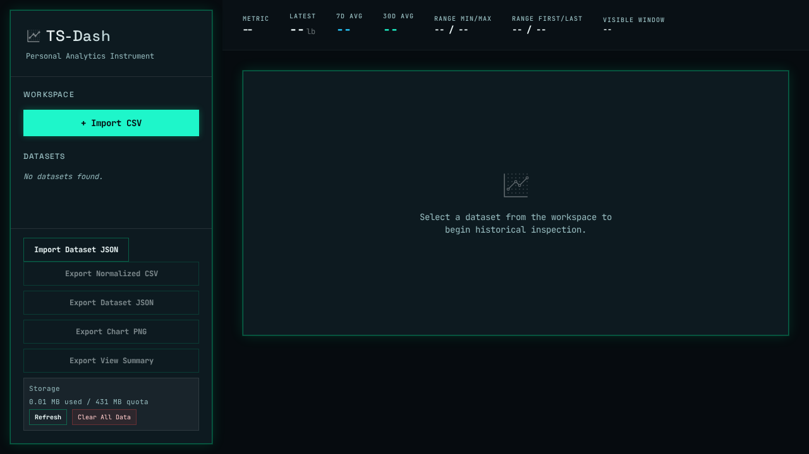
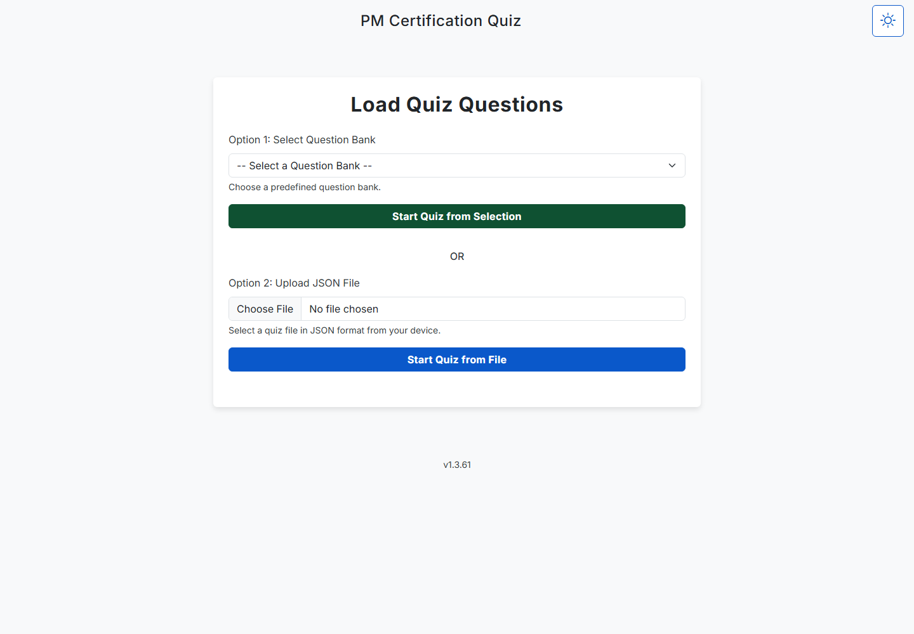
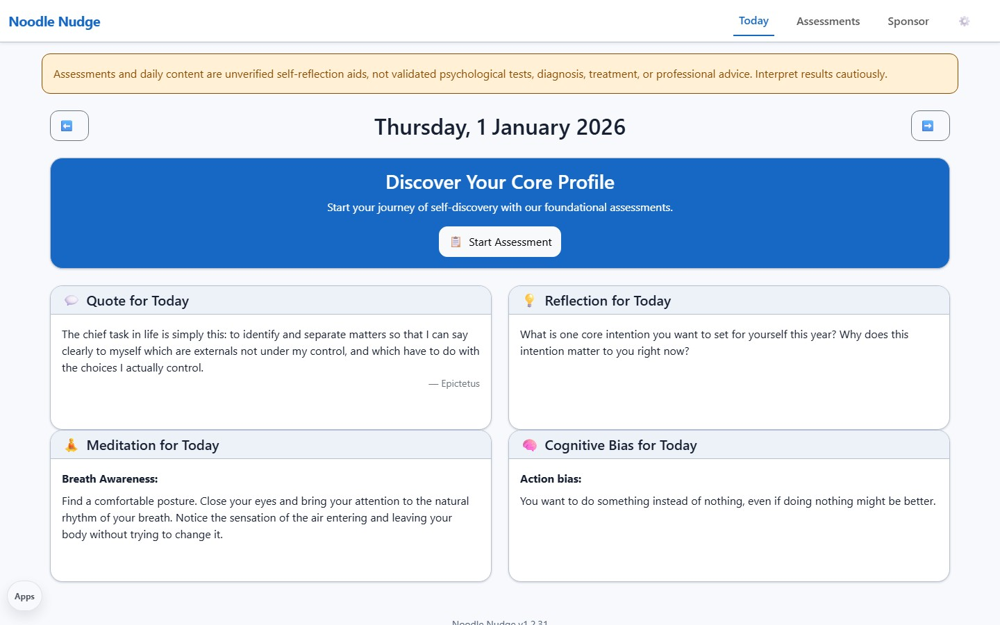
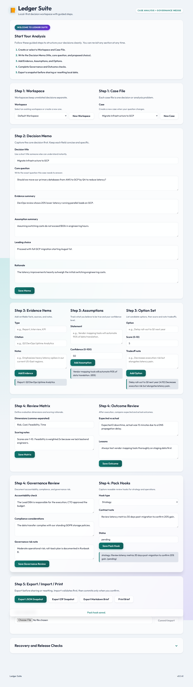
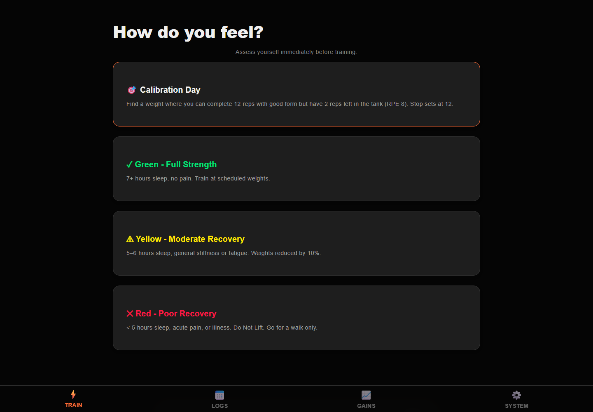
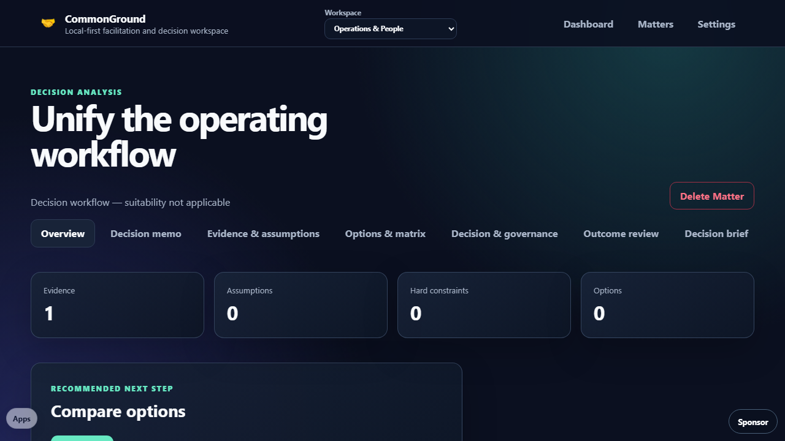

TS-Dash CSV time-series analysis.
PMQuiz Project-management exam practice.
Noodle Nudge Private reflection workflows.
LedgerSuite Decision and judgment workspace.
Flexx Files Offline strength tracker.
CommonGround Facilitation and conflict-resolution workspace.